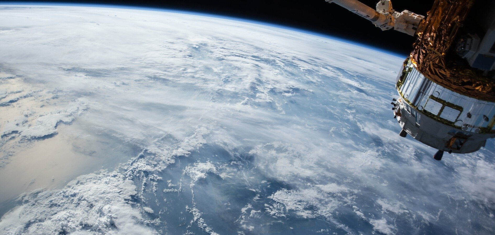
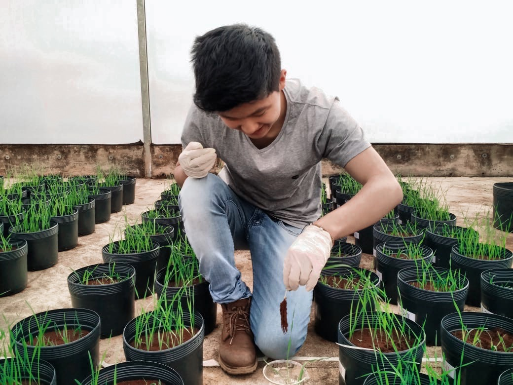

<!DOCTYPE html>
<html lang="pt-BR">
    <title>projeto agrinho</title>
    <meta charset="UTF-8">
    <meta name="viewport" content="width=device-width, initial-scale=1.0">
    <link href="https://cdn.jsdelivr.net/npm/bootstrap@5.3.5/dist/css/bootstrap.min.css" rel="stylesheet" integrity="sha384-SgOJa3DmI69IUzQ2PVdRZhwQ+dy64/BUtbMJw1MZ8t5HZApcHrRKUc4W0kG879m7" crossorigin="anonymous">
</html>

<body>

    <main class="cabecalho">
        <header>
            <h1 class="logo">AGRINHO 2025</h1> 
            <h5>Satélite Agrônomo</h5>
        </header>
        <script src="script.js"></script>
    </main>
    <main class="container">
        <h2 class="h2">IDEIA: </h2> <p>Criar um sistema que usa tecnologias que já existem (tipo satélites e sensores) pra pegar informações sobre uma área rural, sem precisar de muitos equipamentos novos ou gente indo até o local toda hora.</p>
    </main>
    
    <main class="container">
        <h2 class="h2">COMO FUNCIONA:</h2> <p>A gente junta imagens de satélite com sensores (como o densímetro, que mede o solo) e manda tudo pra um sistema que faz os cálculos sozinho. Aí, ele devolve um relatório com o que o produtor precisa saber. Com isso dá pra saber: o tamanho da área, onde tem mais subida ou descida (altitude e declividade), e como é o relevo (se ajuda ou atrapalha no plantio). Pra saber a areia no solo, a gente usa o densímetro: é só misturar o solo com água e ele mostra quanto de areia tem, pela densidade. Tudo isso vai pra um computador que calcula tudo sozinho e já manda de volta o diagnóstico certinho.</p>
    </main>
    <main class="container">
        <h2 class="h2">VANTAGENS:</h2> <p> Usa coisa que já existe (então é mais fácil de aplicar);</p> <p>Faz medidas importantes automaticamente;</p> <p>Evita ter que ir lá medir tudo à mão o tempo todo.</p>
    </main>
    <main class="container">
        <h2 class="h2">LIMITAÇÕES:</h2> <p>Precisa de internet e estrutura, o que pode ser difícil em lugares pequenos ou afastados;</p> <p>Ainda tem que pegar um pouquinho de solo pra analisar, então talvez precise de ajuda técnica.</p>
    </main>
    <main class="container">
        <h2 class="h2">E NO FUTURO?</h2> <p>Dá pra colocar sensores portáteis que medem o solo direto no campo;</p> <p>Pode juntar com sistemas de agricultura de precisão;</p> <p>E fazer um app ou site fácil, com mapas e recomendações pro produtor entender rapidinho.</p>
        
    </main>
    <footer>
        <p>Feito por Isabely</p>
        <a href="https://github.com/isatz8">Github</a>
    </footer>
</body>
